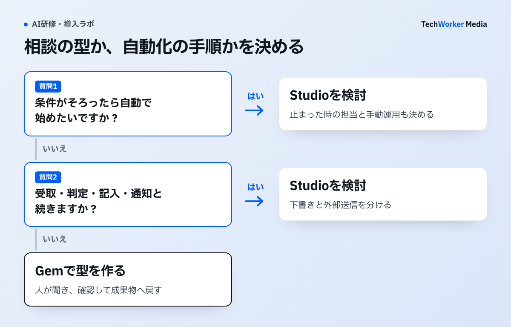

Geminiで「作る」に進むには、どんな層がありますか？
3層あります。Gem、Workspace Studio、Gemini Enterpriseで、担当も費用も別です。
社内で生成AIを使い続けると、同じ前提を毎回説明する手間や、出力の品質差への不満が出ることがあります。ここから先が内製のフェーズです。
「エージェントを作る」という言葉が指す対象は、3つあります。必要な体制も費用も別物です。
- Gemは、役割・前提・出力形式を固定したカスタム版のGeminiです。共有して使い回します。
- Google Workspace Studioは、プログラミングなしで反復作業を自動化するツールです。複数ステップの業務フローを作れます。
- Gemini Enterpriseは、全社のエージェントを一元管理する基盤です。Workspace外のデータとも接続します。
順番は、下の層からです。最上層から入った組織は、たいてい同じ失敗をします。立派な基盤が用意され、管理対象は増えるのに、日常的にAIを使う人が育っていません。
Gemを部門に配って回り始めてから、自動化フローに進みます。それでも足りない範囲が明確になってから、基盤を検討します。この順番なら、各段階で「何が足りないか」を実務の言葉で説明できます。
内製は、どんな手順で進めればよいですか？
Gemで型を作り、Notebookと分け、Studioで自動化し、基盤は足りなくなってから検討します。

手順1：Gemで型にする業務を選びます。向く業務は、次の条件を満たすものです。
- 頻度が高い（週に何度も発生する）。
- 成果物の形が決まっている（議事録・報告・返信文など）。
- 前提の説明が長い（自社の商品・ルール・体裁）。
- 品質のばらつきが問題になっている。
年に数回しか発生しない業務や、毎回アウトプットの形が違う業務には向きません。担当者の判断そのものが価値になる業務も同じです。
実務でよく機能する例を挙げます。問い合わせ返信の下書き、議事録から決定事項と宿題を抜き出す整理、定型報告の構成づくり、社内文書の体裁チェックです。開始単位として、編集部は3〜5個を勧めます。効果の実測から導いた個数ではありません。
Gemを作るのは、詳しい人でなくてかまいません。その業務をよく知っていて、周りから質問されやすい人が作ったGemのほうが、実際には使われます。技術的な難所は情シスが引き取り、業務知識の部分は現場に持たせる分担が現実的です。
手順2：Gemini Notebookとの役割を切り分けます。2026年に、NotebookLMはGemini Notebookに改称されました。法人向けのエディションも、Gemini Notebook Enterpriseに改称されました。機能の中心は変わっていません。指定した資料だけを情報源として、その範囲の中で回答させます。
Gemは「型を配る」担当です。Gemini Notebookは「根拠を資料の中に閉じる」担当です。実務では競合しません。「社内規程に基づいて回答し、その根拠を示す」用途はGemini Notebookが担います。「その回答を社外向けの文章に整える」用途はGemが担います。
どちらを開けるかは、管理コンソールの設定対象です。展開の段階設計は、Geminiの法人導入と合わせて決めてください。
手順3：必要になったら、Workspace Studioで自動化します。Googleのヘルプでは、Studioは次のツールとして案内されています。「プログラミングの知識なしにGoogle Workspace全体の作業タスクを自動化する」ツールです。Geminiを使ったステップ、条件分岐、変数、テンプレートを組み合わせて、複数手順の業務フローを作れます。サードパーティのビジネスアプリとの連携は、限定的なプレビューとして案内されています。
問い合わせ返信なら、Gemで返信の下書きを作り、人が原資料と宛先を確認する範囲から始めます。受信から通知までをフロー化する場合も、下書きの作成と外部送信を別工程へ分け、停止時の担当を先に決めます。
Gemが「1回の相談の質」を上げるのに対し、Studioは手順そのものを人の手から外す層です。使い分けの目安は、次のとおりです。
- 人が「聞く」ことで始まるなら、Gemで足ります。条件がそろったら自動で始まってほしいなら、Studioが要ります。
- 1回のやり取りで完結するなら、Gemで足ります。「受け取る、判定する、書く、通知する」と続くなら、Studioが要ります。
- ばらつきの原因が指示の書き方なら、Gemで足ります。手順の抜け漏れややり忘れなら、Studioが要ります。
自動化は、作るときより、止まったときのコストで評価します。「誰が気づき、誰が直し、止まっている間はどう回すか」の3つが決まっていないフローは、業務に組み込むほど危うくなります。作る前に決めます。
自動化する工程と人が行う工程の分け方は、AIに任せる業務の決め方（業務図ラボ）で扱っています。
提供範囲・対応エディション・利用条件は更新されます。導入前に、管理コンソールと公式ヘルプで最新の状態を確認してください。
手順4：全社基盤は、足りなくなってから検討します。Gemini Enterpriseは、Google Cloud側の基盤です。公式ページでは、Business エディションが1シート月額21米ドルから案内されています。Standard / Plus エディションは、1シート月額30米ドルからです。30日間のトライアルも案内されています（2026年8月時点）。
Standard / Plus 側では、データの所在地に関する要件への対応が挙げられています。より広い管理・ガバナンス機能も挙げられています。検討に進む判断材料は、機能の魅力でなく、足りなくなった具体的な事実です。次のどれかが実際に起きているなら、基盤の検討に意味があります。
- 部門ごとに作ったGemやフローが増え、誰が何を作ったか把握できなくなった。
- 参照させたい業務データがWorkspaceの外（基幹システム、データウェアハウスなど）にあり、都度の手作業が常態化している。
- 監査・データ所在地・アクセス制御について、Workspaceの設定だけでは答えられない要件が出てきた。
手順5：研修は、使う人と作る人に分けて設計します。最初の設計例では、作る担当を各部門の1〜2人に絞ります。業務量と更新負担を見て人数を変えます。二層で設計します。
- 使う人（全社員）：配られた型（Gem）の使い方、入れてよい情報の範囲、生成物の確認を学びます。ゴールは、日常業務で迷わず使えることです。
- 作る人（部門の推進担当）：業務の切り出し方、Gemの設計、Studioでのフロー化、更新と運用のルールを学びます。ゴールは、自部門の型を自分で作り、直し続けられることです。
TechWorkerは、上場企業を含む37社・2,500名を支援してきました。研修では使う人と作る人を分け、更新担当と相談先を設ける運用を提案します。本記事は、二層構成の定着効果を比較した数値を示していません。
内製がうまくいかない例には、どんなものがありますか？
基盤から入る、Gemを増やしすぎる、全員を作る側にする、止まったときを決めない、の4つです。
- 最上層の基盤から入る。使う人が育つ前に、管理対象だけが増えます。
- Gemを20個並べる。どれを使えばよいか分からなくなり、結局どれも使われません。3〜5個で運用を回し、更新の習慣ができてから増やします。
- 全社員に「作れるようになる研修」を配る。作る人を最初から広げすぎると、品質のばらつきと管理コストが同時に増えます。
- 止まったときの担当を決めずに自動化する。業務に組み込むほど、停止の影響が大きくなります。
定着の全体像は、Geminiが定着しない原因と対策にまとめています。費用の考え方は、Gemini研修の費用相場で扱っています。
3つの層は、どう違いますか？
Gemは各部門の推進担当、Studioは推進担当と情シス、Gemini Enterpriseは情シスが担当します。
| 層 | 何を作るか | 誰が担当するか | 追加費用 |
|---|---|---|---|
| Gem | 役割・前提・出力形式を固定したカスタム版のGemini。共有して使い回す | 各部門の推進担当（非エンジニアで可） | Workspaceの契約範囲内 |
| Google Workspace Studio | 複数ステップの業務フロー。条件分岐や変数を使った自動化 | 推進担当＋情シス（運用ルールが要る） | 提供範囲・対応エディションは公式ヘルプで要確認 |
| Gemini Enterprise | 全社のエージェントを一元管理する基盤。Workspace外のデータとも接続 | 情シス・データ基盤の担当 | 別建て契約（1シート月額21米ドルから） |
出典：2026年8月時点のGoogle公式ヘルプとGoogle Cloud公式ページの記載。提供内容・価格は改定されます。検討時に公式情報で確認してください。
Microsoft側にも、同種の層（Copilot Studio）があります。考え方の違いは、Copilot Studio研修と読み比べると整理しやすくなります。
よくある質問
Gemは、役割と手順を固定した相談相手を作る機能です。Gemini Notebook（旧NotebookLM）は、指定した資料の中だけで答えさせるための機能です。型を配るならGemです。社内規程やマニュアルに根拠を限定した回答が要るなら、Gemini Notebookです。
Googleのヘルプでは、プログラミングの知識なしに反復作業を自動化するツールとして案内されています。Geminiを使ったステップ、条件分岐、変数、テンプレートを組み合わせて、業務フローを作れます。提供範囲や対応エディションは変更されます。導入前に、管理コンソールと公式ヘルプで最新の状態を確認してください。
全社のエージェントを一元管理したい、Workspace外のデータともつなぎたいという段階で検討する選択肢です。Google Cloudの公式ページでは、Business エディションが1シート月額21米ドルから案内されています。Standard / Plus エディションは、1シート月額30米ドルからです（2026年8月時点）。まずはGemとStudioで足りるかを試してから判断すると安全です。
「使う人」と「作る人」を分けます。全社員には型を使う研修、各部門の推進担当にはGemやフローを作って配る研修という、二層構成が現実的です。作る人を最初から広げすぎると、品質のばらつきと管理コストが同時に増えます。
次の一歩は何から始めればよいですか？
型にする業務を3〜5個選び、Gemを作る担当者を各部門で決めることから始めます。
- 頻度が高く、成果物の形が決まっている業務を、3〜5個選びます。
- 各部門で、Gemを作る推進担当を1〜2人決めます。
- 管理コンソールで、GemとNotebookとStudioのどこまでを開けるかを決めます。